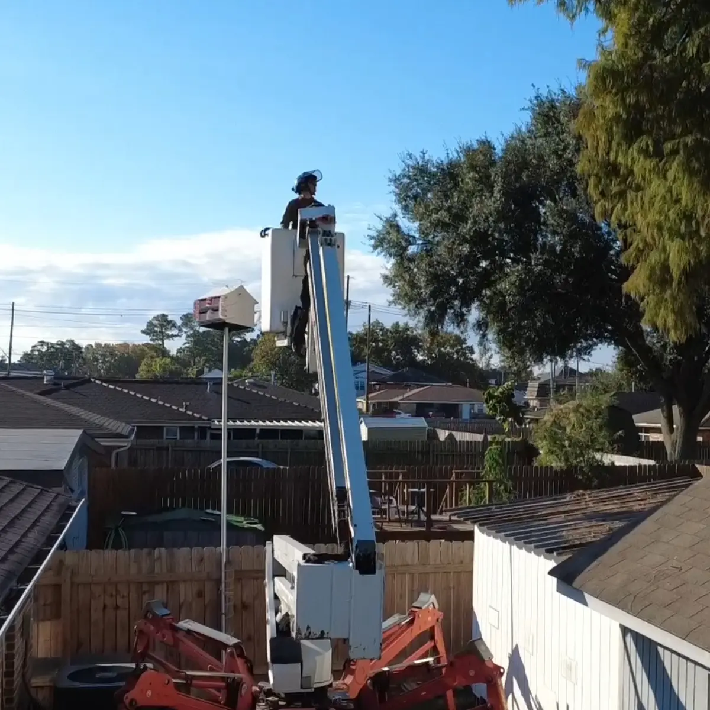
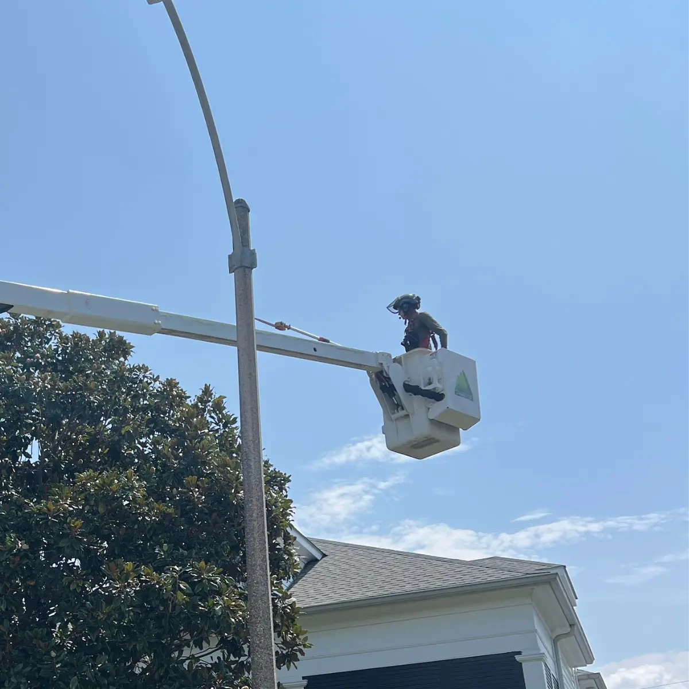

Factors To Consider Before Tree Removal: A Perfect Cut Tree’s Guide
Contact us today for an estimate on our Tree Removal Services in NOLA!
Urgent or unsafe? Call (504) 732-0779


Tree removal is a process which requires careful consideration. Every tree has its own unique characteristics which must be taken into account before deciding whether or not to proceed with the task. A Perfect Cut Tree’s guide explains the factors that should be considered prior to removing a tree in order to ensure safe and effective results.
The guide begins by outlining the importance of understanding why a tree needs to be removed, as this will determine how it is done. The condition of the tree and potential risks associated with it are then discussed in depth, providing an overview of what can go wrong if these aspects are ignored. This includes identifying any diseased branches or roots which may cause damage when disturbed.
Finally, considerations relating to maintenance after removal are examined. In particular, advice on dealing with stumps left behind from felled trees is provided, including recommendations for grinding them away safely and effectively. By following this comprehensive guide, readers can gain an understanding of what needs to be taken into account when undertaking tree removal operations.
A Perfect Cut Tree understands that trees play a vital role in our environment, but occasionally a tree must be removed from a property for safety or aesthetic reasons.
Before you take on a tree removal project, there are important factors to consider.

Important Factors to Consider Before Tree Removal
Tree removal is a necessary and often dangerous task that must be done with caution. There are several safety concerns to consider prior to removing a tree, such as ensuring the surrounding environment is free from any potential hazards like power lines or buildings nearby.
It is also important to assess the condition of the tree itself and determine if it has any structural issues that could put people in danger during removal.
Furthermore, careful consideration should be given to the weather conditions; extreme wind can make cutting down a tree unsafe and even deadly.
Prior to beginning work on the project, all protective gear needs to be acquired and worn properly for the duration of the job. This includes helmet, gloves, boots, harnesses, eye protection, hearing protection and other safety equipment appropriate for the type of machinery being used.
Additionally, workers should inspect their tools beforehand to ensure they are functioning correctly before using them on the tree itself. Taking these steps will help minimize risks associated with working around trees while also protecting yourself from possible injury or harm.

Tree Health And Condition
In addition to safety concerns, tree health and condition should also be taken into consideration before beginning a tree removal project. Beforehand, the age of the tree must be determined so that it is not too young or old for removal.
Furthermore, its species needs to be identified in order to determine if any special tools are needed for cutting down the tree safely and efficiently. Any signs of disease or infestation should also be closely examined as these could make working on the tree more hazardous than normal.
Finally, assess the environment around the tree such as soil quality, drainage, water availability and access to sunlight; all of which can affect how healthy and stable a tree is likely to remain after being cut down.
If any of these factors have been compromised due to construction or other environmental changes they may put additional strain on the remaining trees in an area making them unstable over time. Tree removal professionals need to factor in all of these elements when determining whether a particular job is safe and feasible.

Location Of The Tree
After assessing the tree’s health and condition, its location must also be considered when planning a tree removal project. Depending on where it is situated, certain safety protocols may need to be taken into account in order to ensure that no damage is caused to nearby buildings or other structures.
Additionally, if the tree is located near powerlines then extra caution should be used to avoid any electrical accidents occurring during the process of cutting down the tree.
Moreover, depending on the size of the tree, it could cause significant disruption to traffic and pedestrians if left unattended for an extended period of time; thus it is important to consider how long it will take for the job to be fully completed before beginning work on-site.
By taking all of these factors into consideration beforehand, professionals can plan ahead accordingly and make sure that a safe and efficient job is done without causing any unnecessary delays or disruptions.

Potential Damage To Surrounding Property
When considering a tree removal project, potential damage to surrounding property must also be taken into account.
Prior to beginning the job, it is important for professionals to assess any risks that may arise due to the size and location of the tree; this includes checking if there are any nearby buildings or walls which could potentially be affected by debris from falling branches as well as evaluating whether powerlines might get disrupted during the process.
In addition, depending on where the tree is situated in relation to other trees and plants, root systems can become interconnected over time and cutting down one tree could end up damaging others around it too.
Therefore, careful consideration should be given when planning how best to remove a large tree without causing unintended harm in its wake. By preparing ahead of time accordingly, experts can ensure that all safety protocols are followed so that no unnecessary damage occurs either during or after the job has been completed.

Safe Tree Removal by A Perfect Cut Tree
At A Perfect Cut Tree, our team of tree removal experts have all the necessary skills and experience to safely remove any type of tree for residential or commercial properties.
Our staff is trained in all aspects of tree removal and can assess the location, size and health status of any existing trees with ease. We consider all potential risks posed by the environment as well as any damage that might be caused to nearby property before taking on a project so you can trust that the job will be done with care and precision.
Furthermore, all of our equipment is state-of-the-art and regularly maintained to ensure it’s always in top notch condition so you can rest assured that no matter the tree removal project, A Perfect Cut Tree services has you covered.
What to Photograph From a Safe Distance
Photos and video show us the tree, the property around it, how we would reach it, and any visible hazards.


Tree down or a limb on a line?
Skip the photos and call. Calls are answered 24/7.
(504) 732-0779Office hours: Monday to Friday 7 AM to 5 PM, Saturday 7 AM to 3 PM, closed Sunday.


Ready to Show Us Your Tree?
Show us the tree. An arborist reviews what you send. Photos give us a first look. Some trees need an in-person visit before we can make a final recommendation.